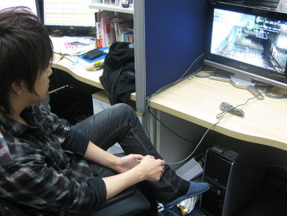
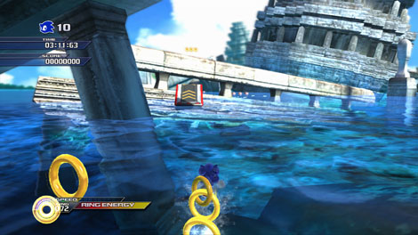
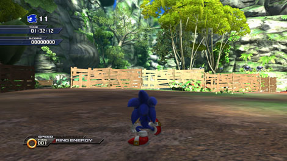
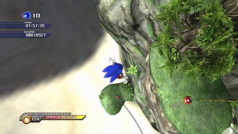
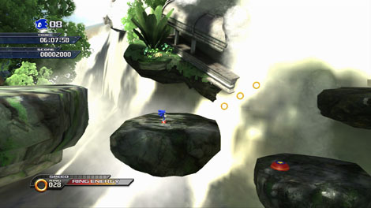
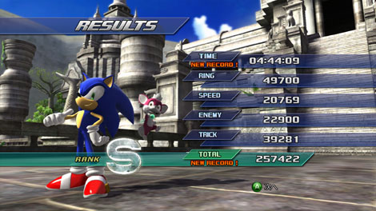

『タイムアタック企画第2回☆ ジャングルジョイライドAct1』
2009年03月23日
こんにちは！
マツバラです！
さて、先週から、
PS3/Xbox360版『SWA』の
ダウンロードコンテンツが販売開始されました！
見事な龍の道が印象的な「チュンナン」の
ステージパックとなっております♪
DLコンテンツは全6回が予定されてます！
皆さま、まだまだ『SWA』は終わりませんよ～！
こんにちは。
ヨシノです。
さて今日は、タイムアタック企画第2弾。
アダバタ「ジャングルジョイライド」Act1を作成した姥さんによる
攻略＆タイム晒しをお届けいたします。
ステージ制作者自らがトライする豪華企画。
是非最後までお楽しみください。
……ヨシノ。
自分の回が終わってプレッシャーから解放されたから、
いつになくテンション高いね……
アッハッハ。
いやー、気分爽快。
では早速！
「ジャングルジョイライド」を作った
姥さんのところに行こう！

姥さーん！
今日のコントローラーさばきの調子はいかがですか？
姥 ： 今、ちょうどタイムアタックやってるとこだよ。
見る？
どれどれ。
お手並み拝見しましょうか。
姥 ： なんで偉そうなんだよ(笑)
でも、本当、速いですね……
ステージのあんなところやこんなところまで
知り尽くしたプレイですね！
ちなみに、このステージ、
想定した目標タイムはいかほどで？
姥 ： 5分切ったら、凄いと思うよ。
ちなみに2人のタイムはどのくらい？
私は、6分弱くらいでしょうか。
私は、その3倍くらいでしょうか。
姥 ：ヨシノ18分！？
どんだけ死んでるんだよ！(笑)
…………
姥さん、ヨシノに突っ込み出したらキリがないので
このステージのタイムの縮め方を
教えてください！
姥 ：そうね、まず……

姥 ： 水上走りの途中でジャンプ台を使って
柱の上を飛び越えて進むところ。
ここ、小ジャンプで柱のジャンプ台を避けて進めるんだ。
そっちのほうが、速い。
おっ！
「避けて直接行ったほうが速い」テクですね！
……また、小難しそうなテクを……
姥 ： じゃあ、まあ、次は簡単なところを紹介するか。
ステージの途中に、
木でバリケードしてあるところがあるんだけど……

姥 ： このバリケードをソニックブーストで破壊して崖から飛び出せるんだ。
……そして落ちて死ぬんですか？
姥 ： なわけねーだろ！(笑)
崖の奥にスプリングがあるから、
それを乗り継いで、ショートカットルートに進めるようになってるんだよ。
あっ、私、それ知ってましたよ♪
姥 ： そっか。じゃあこれは知ってる？

ここは……
奥のスプリングから、右手前のスプリングを乗り継いで進むところですよね？
姥 ： 実は、右手前のスプリングを使わないで進む方法があるんだ。
えっ！ 奥のスプリング、そんなに高く跳べましたっけ？
姥 ： ここからじゃ見えないけど、右の草むらの奥にエッグファイターがいるから、
そいつ目がけてホーミングアタックする。
そうすれば、右手前のスプリングを無視して直接行ける！
き、気付かなかった～！
姥 ： はっはっは。
このステージには色々仕込んだからなあ。
こことかも……

姥 ： なにげなく並んだ3つのリングがあるっしょ？
ここ、「ライトダッシュ」できるんだ。
そうすると右上にスポーンと飛び出せて、足場を抜かして進める。
……そんな解りにくい仕込みしないで、
誰にでも一発でバレる上
頑張らなくても軽くできちゃうように作ってくださいよ。
姥 ： それじゃ攻略の意味ねーだろ！(笑)
さて、じゃあ、そろそろオレのタイムを出しますか。

おおーっ！
流石ですね！
姥 ： 皆さま、このタイムを目標にしてみてくださいね。
そしてこのタイムを越えたら
「創造主に勝ったぜ！」と
お友達に自慢しましょう。
姥 ： それは、正直悔しいけどな(笑)
姥さん、ありがとうございました！
さて、次は……
都会の摩天楼ステージです。
皆さま、乞うご期待。
日時: 2009年03月23日 12:00 | パーマリンク


 ソニックを愛する、元気な『SWA』2年目プランナー。
ソニックを愛する、元気な『SWA』2年目プランナー。 マイペースな『SWA』2年目プランナー。
マイペースな『SWA』2年目プランナー。
 ご意見・ご要望はこちら
ご意見・ご要望はこちら RSS
RSS